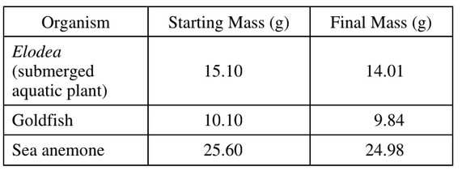

Students in a class measured the mass of various living organisms. They then kept the organisms in the
dark for 24 hours before remeasuring them. None of the organisms were provided with nutrients during the
24-hour period. The data are as follows.

Which of the following is the best explanation for the pattern of change in mass of the organisms over time?
Since the organisms are submerged, they would not lose water due to evaporation.
During cellular respiration, organisms use carbohydrates, giving off carbon dioxide as a byproduct. Since the organisms have a net loss of carbon molecules, they will lose mass.
The law of conservation of matter explains that matter is neither created or destroyed.
Following the previous reasoning, some matter is transferred from the organism to the air through cellular respiration.
Since the organisms were not given nutrients, it is unlikely they will grow and reproduce. If they did grow, their mass would also increase.